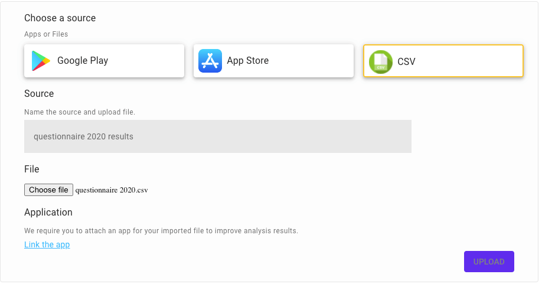
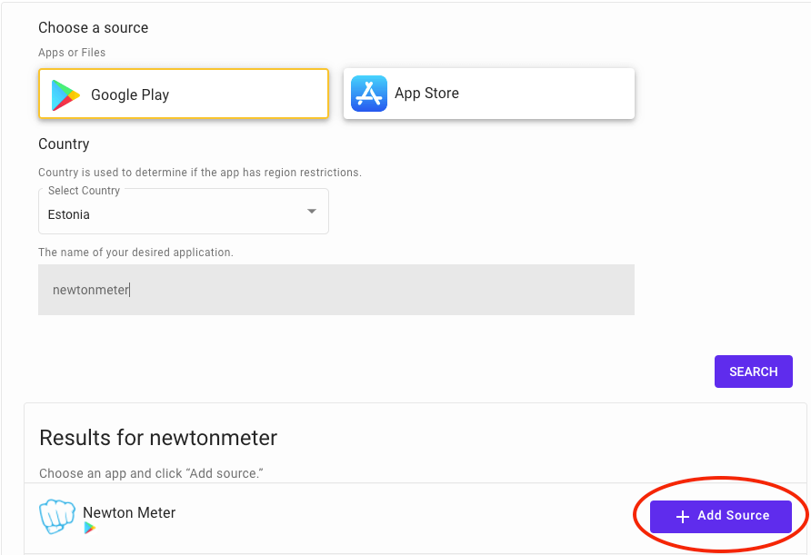

Import CSV
If you have your product up and running, you should be receiving a bunch of emails, in app-feedbacks or conducting qualitative questionnaires with your customers. The purpose is to improve your product or services, but you are definitely struggling with analysing bulk of data in CSV or Excel files. That is why, on top of the Google Play And Apple Store reviews, Applysis can import and analyse any CSV files for you.
Analysis process is simple, it consists of two main steps:
Prepare CSV File
Once you upload your final CSV file, Applysis will start searching for specific columns in it. It is mandatory to have Text column filled in the file. Here is the more detailed description about columns we expect the file to have.
- Text: mandatory, e.g review text, email body etc.
- Title: optional, e.g email subject, question, review title etc.
- Date: optional.
- Rating: optional, e.g review rating, we expect it to be minimum 1, maximum 5
- Author: optional, e.g user name, email address.
- Region: optional, it can hold any region value you desire e.g country, city, county.
- Version: optional, e.g 1.5, 1.6.1 etc.
CSV Import
File Restrictions
File size should not exceed 50 megabytes. For each CSV file we are limiting 2000 rows to be analysed. So if your file contains more than 2000 rows, we will import first 2000, if you want to increase the limit let us know.
Import & Analyse
Once you fill your CSV file you are ready to import it and analyse.
-
Open Applysis platform and navigate to Sources.
-
Click the Add Source button.
-
Select CSV as a source type.
-
Name your Source e.g questionnaire 2020
-
Upload your CSV file.

-
In order to make the analysis results cleaner, more detailed and sophisticated, it is mandatory to link your CSV to Android or iOS application which the CSV file contains the data of. In order to achieve that, click on Link the app located in the below of the window.
-
Select Store, country, enter your app name and then click Search. Once you find your app, click on the Add Source button.

-
Popup window will be closed. Now click the Upload button.
Congrats! 🎉 You have imported your CSV file and Applysis already started to analyse it. Sit back and wait for some time, until our hard-working AI models will finish their job.
If you encounter any problems, please send us an note, we will be in touch soon.